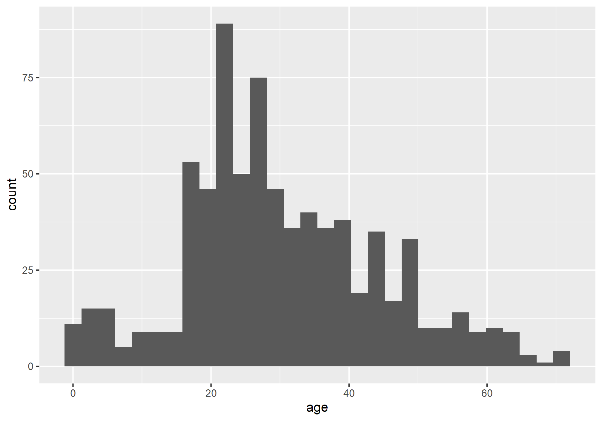
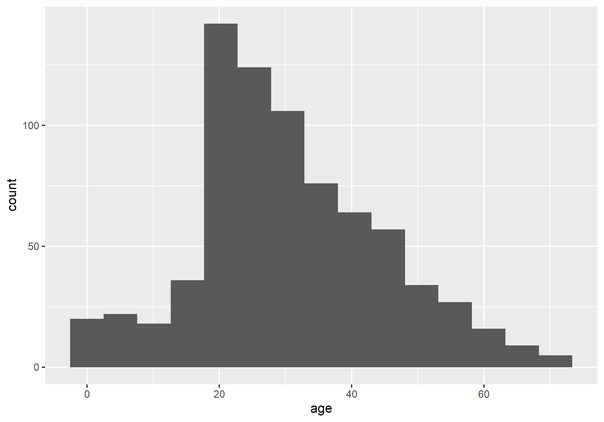
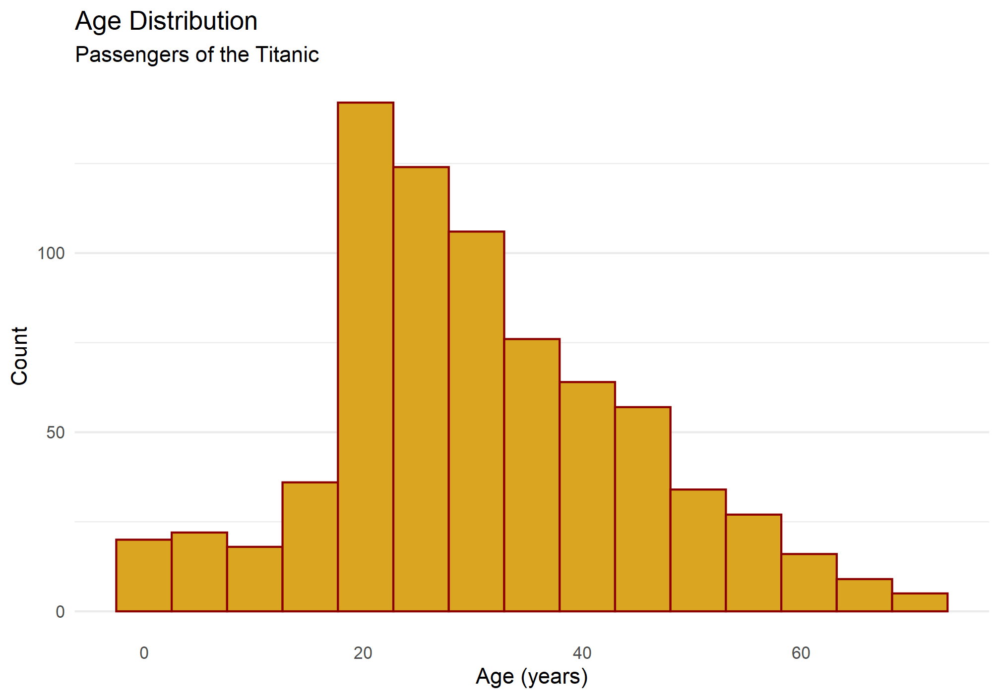

Lab 03
Statistical Inference
Outline
tl;dr reading and writing data, visualizing distributions, and testing hypotheses.
Objectives
This lab will guide you through the process of
- importing and exporting data tables
- and writing relative file paths with
here
- and writing relative file paths with
- visualizing distributions with histograms
- running Student’s t-test
- performing an ANOVA
R Packages
We will be using the following packages:
To install these packages, run the following code in your console:
install.packages(
c("archdata", "ggplot2", "here", "skimr")
)Make sure to attach these into your R session with library(). This should always go at the start of your document!
library(archdata)
library(ggplot2)
library(here)
library(palmerpenguins)
library(skimr)Data
cars- Includes measurements of car speed and stopping distance.
- package:
datasets - reference: https://stat.ethz.ch/R-manual/R-devel/library/datasets/html/cars.html
titanic- Provides information on the fate of passengers of the Titanic, including economic status, sex, age, and survival.
- package:
dviz.supp - reference: https://wilkelab.org/SDS375/
- note: we’re going to download this one rather than get it from a package
Snodgrass- Includes measurements of size, location, and contents of 91 pit houses at the Snodgrass site in Butler County, Missouri.
- reference: https://cran.r-project.org/web/packages/archdata/archdata.pdf
Data IO
To import and export “rectangular” data into R - that’s data that comes in the form of a table with columns and rows - R provides two functions read.csv() and write.csv(). Actually, R has lots of functions for getting that kind of data into R, but we’re going to focus on those two in particular. Before getting to those functions though, we need to talk about file paths.
To read and write data into R, you have to point R to where that data lives on your computer, meaning you have to specify a path to the file that holds the data. This is not a nuisance in and of itself, but it can be, for the more chaotic and disorganized your file system, the more time consuming and error prone this process can be. Consider how easy it would be to introduce a typo - a typo that R would object to! - when you have to type this again and again:
D:/Users/Leslie_Knope/qaad-course/data/penguins.csvAnd all you wanted was your data on Palmer penguins! But, it’s worse than that. If you change the name of that file or move it somewhere else on your computer, that will break the file path you are using, requiring you to re-write it to get to where the data now reside.
Enough! There’s a better way! It’s the here package.
.](https://github.com/allisonhorst/stats-illustrations/blob/master/rstats-artwork/here.png?raw=true)
Illustration by Allison Horst.
The here package makes it easy to reference files by building paths from the top-level directory of an R project that contains those files. Consider this demo project directory:
## D:/Users/Leslie_Knope/qaad-course
## +-- data
## | +-- dart_points.csv
## | +-- penguins.csv
## | \-- raw
## | \-- penguins_raw.csv
## +-- figures
## | \-- my_r_plot.png
## +-- misc
## +-- qaad-course.Rproj
## \-- R
## +-- lab01.html
## +-- lab01.Rmd
## +-- lab02.Rmd
## \-- vernon-proposal.RmdYou see a couple of things here.
- The full path to the top-level directory for this project is D:/Users/Leslie_Knope/qaad-course.
- The project includes four sub-folders: data, figures, misc, and R.
- The project includes one R project file qaad-course.Rproj.
If you open this project in RStudio and type here::here() in the console, it will give you the path to the top-level project directory (the folder that contains the .Rproj file).
here::here()
## [1] "D:/Users/Leslie_Knope/qaad-course"You can specify additional folders and files to the here() function to navigate around this project folder. For instance, if you want to point to the raw penguins data in the sub-sub-folder raw, you would do it like this:
here::here("data", "raw", "penguins_raw.csv")
## [1] "D:/Users/Leslie_Knope/qaad-course/data/raw/penguins_raw.csv"And as you see, it builds the entire path for you. This should key you into a very, very important lesson:
Whenever you start a new research project, create an R project folder and strive as far as possible to keep all data and code associated with that project in the project folder. This will make it easier to access the data in your R scripts with
here()!
Now, let’s talk about read.csv() and write.csv(). The process of using these is quite simple. Let’s start with write.csv(). It goes like this:
write.csv(penguins, file = here("data", "penguins.csv"))Here, I tell the function that I want to write the penguins data to a csv file (csv is short for “Commas-separated values”). I also tell the function where that file should be saved and what it should be called. Notice that I use the here() function to do this! I have said, “Save the penguins data to a file, call it penguins.csv and put it in the data folder in the project directory.”
If you haven’t already, try running that code. Then navigate to your project folder and see if the penguins data was successfully saved to your project’s data folder.
Once you have run that code, you can read the file you created back into R with read.csv().
penguins2 <- read.csv(here("data", "penguins.csv"))Notice that I assigned the table to penguins2. This is to ensure that I can continue to work with it in R.
Exercises
- Use
here()to build paths to the figures, data, and R folders in your project directory. - Use
write.csv()andhere()to write thecarsdata to a file called cars.csv in your project’s data folder. - Remove the cars data from your environment with
remove(cars). If you look in the environment pane of RStudio (in the top right corner), you should see that thecarstable has been removed. - Now read cars.csv back into R with
read.csv()andhere()and assign it tocars. Check to make sure the table is back in your environment.
Histograms
Note! Before you work through this section, add the following line of code to your Rmd document for this lab and run it. If you have a stable internet connection, you can actually use read.csv() to download tables that are stored online, and we’re using that here to get data on the Titanic.
titanic <- read.csv("https://raw.githubusercontent.com/wilkelab/SDS375/master/datasets/titanic.csv")A histogram is an excellent aid for visualizing the distribution of numerical data. Making one involves “binning” a continuous variable,n counting the number of observations that fall into each bin, then drawing a rectangle for each bin whose height is proportional to the count for that bin. A good example of this is the distribution of a population over age ranges. Consider, for example, the age distribution of the passengers of the Titanic. First, let’s look at the frequency table:
| Age Range | Count | Age Range | Count | |
|---|---|---|---|---|
| 0–5 | 36 | 41–45 | 54 | |
| 6–10 | 19 | 46–50 | 50 | |
| 11–15 | 18 | 51–55 | 26 | |
| 16–20 | 99 | 56–60 | 22 | |
| 21–25 | 139 | 61–65 | 16 | |
| 26–30 | 121 | 66–70 | 3 | |
| 31–35 | 76 | 71–75 | 3 | |
| 36–40 | 74 | 76–80 | 0 |
Here we have binned the ages into 5 year intervals. We can plot this distribution with a histogram using ggplot() and geom_histogram() like so:
ggplot(titanic) +
geom_histogram(
aes(age)
)
## `stat_bin()` using `bins = 30`. Pick better value with `binwidth`.
Notice that ggplot2 provides an informative message that the default number of bins used in this plot is 30, which makes the age interval for each bin about 2.5 years. We can (and SHOULD!) change this by specifying a different number of bins with bins.
ggplot(titanic) +
geom_histogram(
aes(age),
bins = 15
)
As always, you can change the fill and outline color for these plots by supplying those parameters to the geometry. We can also clean up the labels with labs() and change the theme if we like (and we do). And since the heights of these bars are what we care about, we can turn off the light vertical grid lines that ggplot2 adds by default by specifying this as a theme() option.
ggplot(titanic) +
geom_histogram(
aes(age),
bins = 15,
fill = "goldenrod",
color = "darkred"
) +
labs(
x = "Age (years)",
y = "Count",
title = "Age Distribution",
subtitle = "Passengers of the Titanic"
) +
theme_minimal() +
theme(
panel.grid.major.x = element_blank(),
panel.grid.minor.x = element_blank()
)
Exercises
- Create a histogram of penguin bill length using the
penguinsdataset. Then do all of the following:- Change the number of bins (try two different options).
- Change the fill and outline color.
- Reset the labels to be more informative.
- Change the theme and remove the vertical grid lines.
Students t-test
We use Student’s t-test (technically, Welch’s two-sample t-test) to evaluate whether two samples come from the same population. This test compares the difference in sample means to a t-distribution to determine its probability - the more improbable, the less likely the samples come from the same distribution. To perform this test in R, we use the t.test() function, providing it with two samples.
As an example, suppose we want to answer the following:
Question: Do our two samples of hobbits come from the same population?
And we have measurements on the quantity of beer they consume in a given evening (measured in pints). Here are our two samples:
sample1 <- c(1.7, 1.5, 2.9, 0.6, 0.8, 1.9)
sample2 <- c(0.8, 0.1, 0.3, 0.4, 0.1, 1.0)Before we run the test, let’s make sure we have our hypotheses clear.
- \(H_0\): There is NO difference in mean beer consumption (\(\mu_1 = \mu_2\))
- \(H_1\): There is a difference in mean beer consumption (\(\mu_1 \neq \mu_2\))
We also need to specify our critical value. Here, we’ll stick with the standard in science:
- \(\alpha = 0.05\)
Now, we can run our test!
t.test(sample1, sample2)
##
## Welch Two Sample t-test
##
## data: sample1 and sample2
## t = 3.0102, df = 6.9446, p-value = 0.01984
## alternative hypothesis: true difference in means is not equal to 0
## 95 percent confidence interval:
## 0.2380655 1.9952678
## sample estimates:
## mean of x mean of y
## 1.566667 0.450000Notice the output that R has provided here. You have the name of the test: Welch Two Sample t-test (this is a version of Student’s t-test for two independent samples). It gives you the t-statistic, the degrees of freedom (df), and the p-value. It also states the alternative hypothesis and gives you the mean of each sample. In this case, \(p < \alpha\). Hence, we reject the null. These hobbits are definitely strange.
If your samples are in a table, you can also call t.test() with a formula. So, assume your data above are in a table like so:
samples <- data.frame(
pints = c(1.7, 1.5, 2.9, 0.6, 0.8, 1.9, 0.8, 0.1, 0.3, 0.4, 0.1, 1.0),
sample = c(rep(1, 6), rep(2, 6))
)
samples
## pints sample
## 1 1.7 1
## 2 1.5 1
## 3 2.9 1
## 4 0.6 1
## 5 0.8 1
## 6 1.9 1
## 7 0.8 2
## 8 0.1 2
## 9 0.3 2
## 10 0.4 2
## 11 0.1 2
## 12 1.0 2Then you would run the t.test() this way:
t.test(pints ~ sample, data = samples)
##
## Welch Two Sample t-test
##
## data: pints by sample
## t = 3.0102, df = 6.9446, p-value = 0.01984
## alternative hypothesis: true difference in means between group 1 and group 2 is not equal to 0
## 95 percent confidence interval:
## 0.2380655 1.9952678
## sample estimates:
## mean in group 1 mean in group 2
## 1.566667 0.450000You can read this as saying, “Run a t-test comparing the mean amount of beer drank in each sample using this dataset.” You will notice that the results are the same, we just called the function in a slightly different way because of how we had the data stored.
Exercises
- Perform a t-test on these two samples of dwarves and their beer consumption (measured in pints).
- Be sure to specify the null and alternate hypotheses.
- State the critical value.
- Run the test and print the results.
sample1 <- c(8.5, 7.5, 14.5, 3.0, 4.0, 9.5)
sample2 <- c(12.2, 1.53, 4.5, 6.12, 1.5,15.30)- Based on the test, do you accept or reject the null hypothesis? Why?
ANOVA
Like the t-test, the ANOVA is used to test for a difference between samples, to see whether they come from the same population. Unlike the t-test, however, the ANOVA can be used on more than two samples. It does by decomposing the total variance into within and between group variance. The proportion of these defines the F-statistic, which the test compares to the F-distribution to evaluate its probability. A highly improbably F-statistic means that at least one group or sample comes from a different population. To perform this test in R, we use the aov() function.
As an example, suppose we have height measurements (let’s say in feet) for three groups in Middle Earth and we want to know the following:
Question: Are these samples from the same population? Are they all hobbits or all dwarves? Humans? Elves? Orcs?
Here is our data.
samples <- data.frame(
height = c(3, 4, 5, 6, 4, 5, 6, 7, 7, 8, 9, 10),
sample = c(1, 1, 1, 1, 2, 2, 2, 2, 3, 3, 3, 3)
)
samples
## height sample
## 1 3 1
## 2 4 1
## 3 5 1
## 4 6 1
## 5 4 2
## 6 5 2
## 7 6 2
## 8 7 2
## 9 7 3
## 10 8 3
## 11 9 3
## 12 10 3As always, we first specify our null and alternate hypotheses and the critical value we will use to determine whether to reject the null.
- \(H_0\): There is no difference in height between groups.
- \(H_1\): At least one group differs in height.
And our critical value, again, will be 0.05.
- \(\alpha = 0.05\)
Now, we can conduct our test.
aov_test <- aov(height ~ sample, data = samples)There are two things to note here. First, we are assigning the output of this ANOVA test to an object. Second, we call the test using a formula, in this case height ~ sample. The full call to aov() you can read as saying, “Perform an analysis of variance comparing the heights for each sample in this dataset.” If we print this object, it looks like this:
aov_test
## Call:
## aov(formula = height ~ sample, data = samples)
##
## Terms:
## sample Residuals
## Sum of Squares 32.00000 17.66667
## Deg. of Freedom 1 10
##
## Residual standard error: 1.32916
## Estimated effects may be unbalancedWhile this printout offers some useful information, a much more useful and informative summary of the test is provided by an ANOVA table. We can generate one of these by running the summary() function on our test.
summary(aov_test)
## Df Sum Sq Mean Sq F value Pr(>F)
## sample 1 32.00 32.00 18.11 0.00167 **
## Residuals 10 17.67 1.77
## ---
## Signif. codes: 0 '***' 0.001 '**' 0.01 '*' 0.05 '.' 0.1 ' ' 1This table has two rows, one for the between-group variance and one for the within-group variance respectively. As you can see, R refers to these, somewhat cryptically, as the Sample and Residuals. The reason for this concerns the fact that the aov() function is actually fitting a linear model, but let’s leave that detail to the side. For now, just note that the columns are, in order,
- the degrees of freedom,
- the sum of squares,
- the mean sum of squares (the sum of squares divided by the degrees of freedom),
- the F-statistic (the ratio of the mean sum of squares), and
- the p-value (determined by comparing the F-statistic to the F-distribution).
In this case, \(p < \alpha\), so we reject the null hypothesis, meaning that at least one of these groups is different.
Exercises
- Perform an ANOVA on these four samples of people from Middle Earth and their heights (measured in feet).
- Be sure to specify the null and alternate hypotheses.
- State the critical value.
- Run the test and print the results.
- Be sure to assign the test to an object.
- Provide a
summary()of the test.
samples <- data.frame(
height = c(6, 4, 5, 6, 9, 10, 7, 3, 4, 5, 7, 8, 4, 4, 7, 3),
sample = c(1, 1, 1, 1, 2, 2, 2, 2, 3, 3, 3, 3, 4, 4, 4, 4)
)- Based on the test, do you accept or reject the null hypothesis? Why?
Homework
- Load the
Snodgrassdataset from thearchdatapackage usingdata(Snodgrass). This dataset includes measurements of pithouses found in a small village affiliated with maize farmers in Missouri about 650 years ago.- Save this table to your project’s data folder with
write.csv()andhere(). - Run
remove(Snodgrass). This removes the table from your environment. - Load the
Snodgrasstable back into R withread.csv()andhere(). - Make sure you assign the table to an object called
Snodgrass. - Use
skim()to summarize this data.
- Save this table to your project’s data folder with
- Calculate the mean and standard deviation of the inside floor area of each pithouse using
mean()andsd(). You’ll need to pull theAreavariable out of the table withSnodgrass$Area. Hint: if you were to calculate the variance, you would usevar(Snodgrass$Area). - Use
ggplot()andgeom_histogram()to plot a histogram showing the distribution of floor area. Make sure to do all of the following (only need to make one graph):- Change the default number of bins.
- Change the fill and outline color.
- Update the labels and the plot title.
- Choose an appropriate theme and remove the vertical grid lines.
- Some of these pithouses occur inside a walled-in portion of the village. This information is provided by the
Insidevariable in the dataset. Run a t-test to determine whether the mean floor area of pithouses inside the walled-in area differs significantly from the mean floor area of pithouses outside the wall.- These data are in a table, so make sure to use the formula notation.
- State the null and alternative hypotheses.
- Specify the critical value.
- Run the test and print the result.
- Does the test confirm or refute the null hypothesis? Why?
- How would you interpret this result?
- The pithouses were initially divided into three groups or “segments” based on their location: segment one includes those inside the wall, segment two those to the north and west of the wall, and segment three those to the east and south of the wall. Run an ANOVA test to determine whether mean floor area for these groups is significantly different.
- State the null and alternative hypotheses.
- Specify the critical value.
- Run the test and print the result.
- Be sure to assign the result to an object.
- Provide a
summary()of the test. - Does the test confirm or refute the null hypothesis? Why?
- How would you interpret this result?